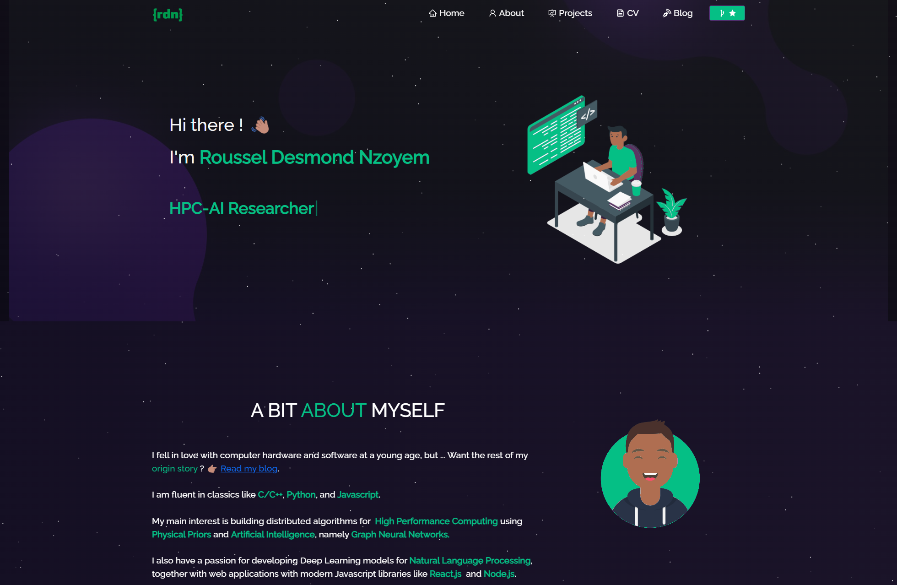

Welcome! This is my very first post on this blog.
I’ve never really owned a blog, even though it has been on my mind for more than 2 years now. Now that I’ve got a brand-new portfolio website, I feel like I’m never going to get a better opportunity than this to flesh out some of my ideas.
Previous iterations of my personal websites might not be accessible anymore, but snapshoots can be found below.

I cannot say what was wrong with versions 1 and 2. My biggest concern was that I couldn’t write code like in iPython notebooks. The coding feature is something I value a lot for Data Science tutorials. The current iteration (version 3) is built on Quarto which fully supports in-line code cells in Python and Julia, my top 2 scripting languages. It offered a template more gorgeous than anything that I found elsewhere.
Now that you know my reasons for making these changes, you can tell me which version you think is best. You can react below with 👍 for version 1, 🎉 for version 2, or ❤️ for version 3. The comment section is handled via Giscus, so you need to create a GitHub account to be able to react or leave a comment. It’s super easy though.
Please go ahead and tell me which one’s preferable so that I can incorporate the best of what that version has to offer. As always, thanks for reading !